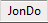

JonDo – First Steps Contents
JonDo – First Steps Contents  Preparing the
Browser Alternative
Browsers
Preparing the
Browser Alternative
Browsers JonDo – First Steps Contents Preparing the
Browser Alternative
Browsers
JonDoFox is a Firefox browser profile particularly optimised for anonymous surfing over JonDonym.
If not done yet, install Firefox on your system first. After that, you may install JonDoFox as follows:
Launch the JonDoFox installation program, choose "lite" oder "complete", and then follow the instructions.
unzip
profile.zip.firefox -P.Any "normal" Firefox configuration you may have previously created remains untouched thereby. After installation, you may choose between both configurations. When a new version of JonDoFox is released, you may always install the new version "over" the old one, that is into the same directory. You bookmarks will be kept.
The JonDoFox installation program is also suitable for a "portable" installation. If you choose the "for travelling" Installation, you may install JonDoFox on both a removable drive and on you hard drive. Any existing Firefox or JonDoFox installation on your computer remains untouched if you do not install JonDoFox to the same directory and update an existing installation thereby. While updating from earlier JonDoFox versions your bookmarks are kept. JonDoFox "portable" is compatible with the PortableApps menu for which a lot of other applications are available as well.
You get a "portable" version of JonDoFox for Mac OS X here (or, as an alternative, the lite version). You may start this version from both a removable drive and from your hard drive. For installation, please open the downloaded file with a double click. Then copy the included file on a data medium of your choice. You may start it from there with a simple double click.
The JonDoFox lite packet already contains all extensions which are relevant for your security with optimised settings. You will find some other useful extensions in the "complete packet which we have individually tested concerning their security and compatibility with JonDoFox. The Firefox statur bar always gives you control of the most important functions integrated in JonDoFox:
Using CS-Lite, you may very conveniently determine from which web sites you
accept Cookies and for which ones you block Cookies. If you click on the
CS-Lite Icon  with your left mouse button, you may give the
following approvals for the currently visited web site:
with your left mouse button, you may give the
following approvals for the currently visited web site:
Warning: You should never use the option  Allow Cookies Globally
if possible. This allows Cookies from all websites that have not been
explicitely blocked, and others
may follow your steps on the web.
Allow Cookies Globally
if possible. This allows Cookies from all websites that have not been
explicitely blocked, and others
may follow your steps on the web.
AdblockPlus works as an advertisement filter in the background. Typically, you do not have to alter its settings. However, you may add your own filter lists at any time.
NoScript  lets you
conveniently control which potential dangerous scripts and plugins from a
webite your browser may execute and which not.
lets you
conveniently control which potential dangerous scripts and plugins from a
webite your browser may execute and which not.
Controlling installed plugins
When you visit a web site containing plugin content like Flash movies or Java
applets, these contents will be automatically blocked by NoScript. A
placeholder (left image) appears instead of the active content:

|
 |
You may allow the content by clicking on the placeholder or by choosing the
respective option in  Blocked Objects after clicking
on the NoScript menu icon .
Blocked Objects after clicking
on the NoScript menu icon .
Warning: Without special means of protection, allowed plugin contents may completely or partially revoke your anonymity or even damage your system.
If you click on the NoScript icon you get a list of
all addresses/service providers with JavaScript codes on the currently visited
web site. The respective entries are marked with the icon:
icon:
 |
 |
By clicking on Temporarily allow you
activate scripts for this entry. By another click, as shown in the right image,
you may easily remove this permission again. If you would like to remove the
permission for all addresses, you just have to click on  Revoke temporary
permissions.
Revoke temporary
permissions.
Warning: You should give as few of such permissions as possible, and if possible only for the currently visited web site. Third-party scripts or scripts from other addresses are often only used to spy on you, and are rarely needed for the functionality of the web site.
If you generally distrust any address you may classify it as
untrusted, and it will afterwards no more show up within the addresses
you might allow. In order to make this classification, move your mouse over the
option  Untrusted. Then, you
get an overview of the addresses on the visited web site which you may mark as
untrusted:
Untrusted. Then, you
get an overview of the addresses on the visited web site which you may mark as
untrusted:

You may undo this action the same way.
If you would like to surf the Web with another (local) proxy than JonDo or without any proxy, just use the button  integrated in JonDoFox (down to the right) in order to switch between different proxy configurations:

 Edit Custom
Proxy in order to create such an individual proxy configuration.
However, this is only recommended for experts.
Edit Custom
Proxy in order to create such an individual proxy configuration.
However, this is only recommended for experts.Whenever you like to bypass the proxy when downloading a file whithout completely deactivating it (e.g. when downloading large files to save time and money), just open the context menu with a right mouse click on the file and choose Bypass JonDo/Tor/Proxy and Save Link As...
In order to keep yourself from having to activate the dangerous Flash in your browser, you should always download web videos to your hard drive and play them from there. This also saves you the additional data traffic which would be needed to view a streaming video again. JonDoFox contains some download tools for doing this. For Windows and Linux (under WINE), there moreover exists an excellent freeware program called aTube Catcher. You may configure this program for JonDo by activating the HTTP proxy in aTube Catcher under Tools->Connection settings and setting it to Host:127.0.0.1 and Port: 4001

For playing movies of all video formats and on all operating systems, the free VideoLAN Media Player is a very good choice.
JonDo – First Steps Contents Preparing the
Browser Alternative
Browsers